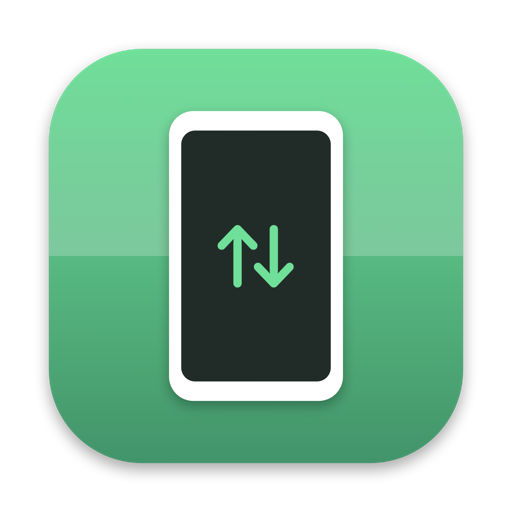
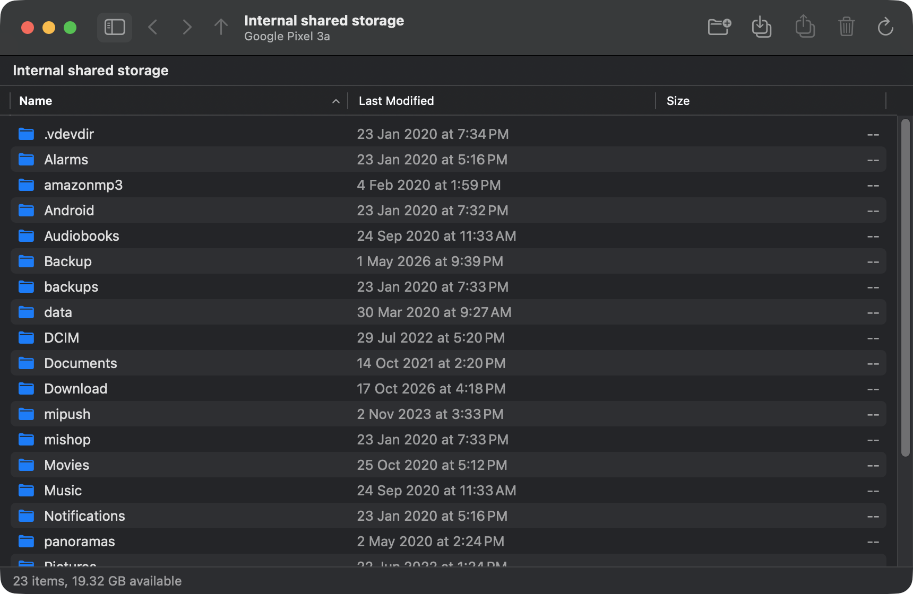

Copy files between your Mac and your Android phone over a USB cable. A native Apple Silicon replacement for Google's abandoned Android File Transfer.
brew tap rajpdus/tap && brew trust rajpdus/tap && brew install --cask androidftor download the latest release · source on GitHub

Android phones do not show up as disks. Since Android 3.0 they speak MTP, the Media Transfer Protocol, over USB: the phone stays in control of its storage and hands files to the computer one object at a time. Windows and Linux ship an MTP client; macOS never did. Google filled the gap with Android File Transfer in 2011 and last touched it in 2018, so today it is an Intel-only binary running under Rosetta with a login-item "Agent" that seizes the USB port whenever a phone appears.
AndroidFT does the same job with current tools: a small SwiftUI app around libmtp, built for arm64, with hot-plug detection inside the app instead of a helper that runs at login.
Large files move at USB 2 speed on most phones, roughly 25 to 35 MB/s. The phone must be unlocked and set to File transfer in the USB notification; in Charging only mode it exposes no storage at all.
Internal storage and SD card, sortable name / date / size columns, breadcrumb path bar, back, forward and enclosing-folder navigation.
Drop files or whole folders from Finder onto the window. Drag items out to copy them to the Mac. Toolbar buttons do the same through open panels.
Everything the original could do, with confirmation before deleting and a Replace / Replace All / Skip prompt on name clashes.
Bytes copied, total, and time remaining in a sheet you can cancel at any point.
Plug in, unlock, choose File transfer. The app notices the phone and opens its storage. Nothing runs at login.
Google's app was decompiled with REA and Ghidra first, so the device-open sequence and quirks that make real phones work are preserved. Read the notes.
brew tap rajpdus/tap brew trust rajpdus/tap # Homebrew 7 asks you to trust third-party taps once brew install --cask androidft
The app is signed ad hoc rather than with an Apple Developer ID, so Gatekeeper would block a plain download; the cask clears the quarantine flag after installing. For a manual download, run xattr -dr com.apple.quarantine /Applications/AndroidFT.app once.
Already have Google's Android File Transfer? Quit it and remove Android File Transfer Agent from System Settings → General → Login Items, or it will keep grabbing the phone.